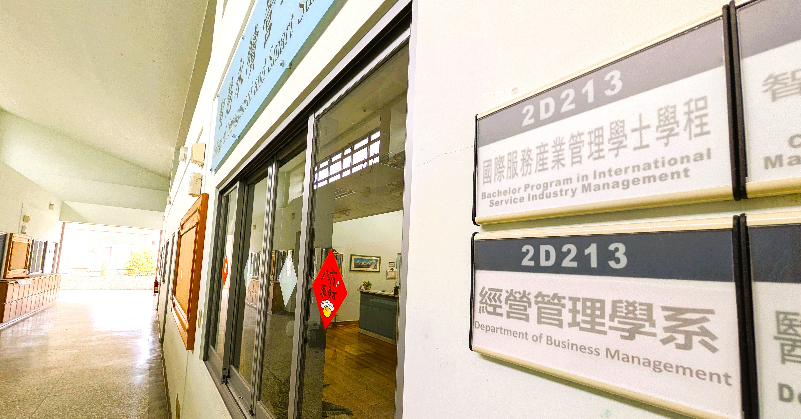
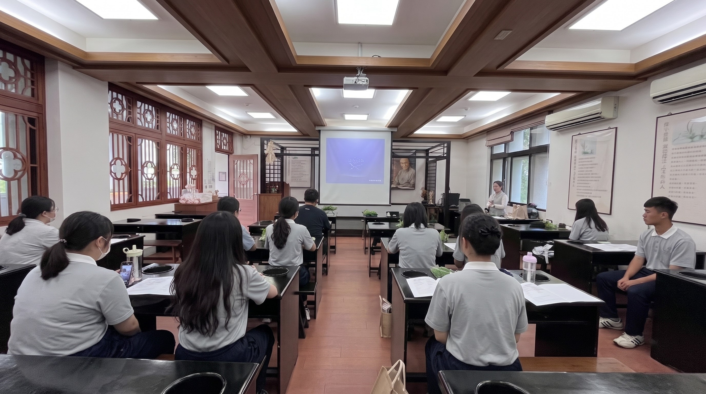
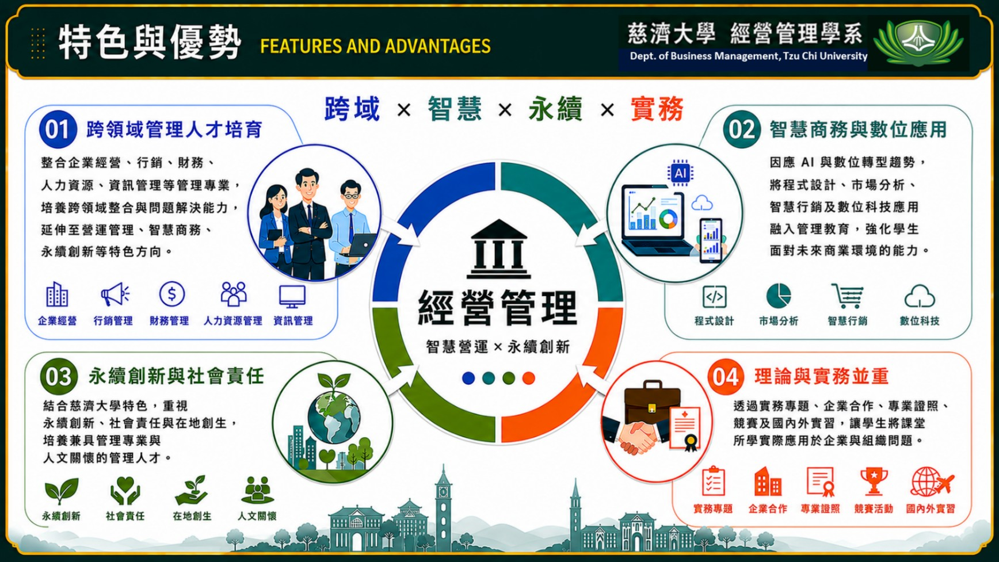

學系使命
以人文素養為根基，結合經營管理專業與實務學習，培育能以創意、合作與國際視野回應組織及社會需求的商管人才。
使命文字依舊站資料與教育目標整理，屬呈現稿，待系務確認。
智慧營運×永續創新×國際接軌


Knowledge · Practice · Humanity在專業與人文之間，探索經營的可能。
慈濟大學 經營管理學系
掌握招生、課程與活動資訊。
目前尚未提供正式公告；公告確認後將於此處顯示。
慈濟大學經營管理學系隸屬智慧永續管理學院，以「跨域、智慧、永續、實務」為核心，發展「智慧營運」與「永續創新」兩大特色，融合 AI 應用、智慧行銷、數據分析、ESG 與地方創生，培養具數位決策與永續創新能力的商管人才。課程強調專題實作、企業實習與產學合作，並積極拓展海外實習、國際企業合作（ViTrox、金光集團 Sinar Mas）及人才培育計畫，建構從學習、實務到就業的培育路徑，培養兼具人文關懷與國際競爭力的經營管理人才。
以人文素養為根基，結合經營管理專業與實務學習，培育能以創意、合作與國際視野回應組織及社會需求的商管人才。
使命文字依舊站資料與教育目標整理，屬呈現稿，待系務確認。
結合 AI 應用、智慧行銷與數據分析，培養數據驅動的管理與決策能力。
融入 ESG、綠色行銷、地方創生與企業社會責任，培養永續創新思維。
透過實務專題、競賽及企業實習，強化問題解決與職場實戰能力。
鏈結國際企業與海外合作夥伴，拓展海外實習、國際人才培育及就業機會；合作夥伴包含 ViTrox 與金光集團 Sinar Mas。
國際企業合作與人才培育計畫依目前提供資料整理。

整合企業經營、行銷、財務、人力資源、資訊管理等管理專業，培養跨領域整合與問題解決能力，延伸至營運管理、智慧商務、永續創新等特色方向。
相關領域：企業經營、行銷管理、財務管理、人力資源管理、資訊管理。
因應 AI 與數位轉型趨勢，將程式設計、市場分析、智慧行銷及數位科技應用融入管理教育，強化學生面對未來商業環境的能力。
相關領域：程式設計、市場分析、智慧行銷、數位科技。
結合慈濟大學特色，重視永續創新、社會責任與在地創生，培養兼具管理專業與人文關懷的管理人才。
相關領域：永續創新、社會責任、在地創生、人文關懷。
透過實務專題、企業合作、專業證照、競賽及國內外實習，讓學生將課堂所學實際應用於企業與組織問題。
相關領域：實務專題、企業合作、專業證照、競賽活動、國內外實習。
教育目標與核心能力依舊版課程地圖整理；使命為呈現稿，正式文字待系務確認。
從會計專業出發，逐步拓展至資訊、行銷流通與跨領域經營管理。
設立會計系，培養具備專業會計知識與技能的人才。
新增資訊管理課程，回應會計與資訊整合人才的需求。
發展行銷、物流與流通領域，拓展課程與專業學習方向。
課程拓展至企業管理、智慧行銷、創新創業、餐飲廚藝、永續與服務管理等方向。
系所正式改制，進入新的發展階段，持續培養具社會責任感與全球視野的經營管理人才。
沿革內容依舊版網站圖文整理。